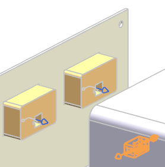
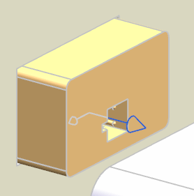
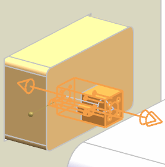
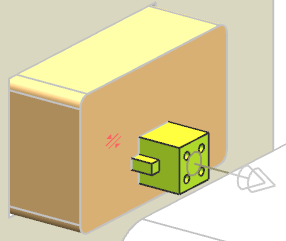

Place a 4-pin connector in your wire harness
-
Select Place Part
 .
.
-
Click Open
 , and then double-click rte1_hl_4pin_conn.
, and then double-click rte1_hl_4pin_conn.
-
点击确定。
-
Zoom in on the two meters.

You can see a 4-pin receptacle on the back of each meter. All of the 4-pin connections on the devices in this assembly have been qualified with a fitting port and a rotation vector that points to the index slot in the body of the device.

-
Select the port.
The connector is now attached to the meter. NX uses the port's rotation vector to position and orient the connector correctly within the receptacle.

-
In the Part Options group, from the Reference Set list, make sure PORT is still selected.
-
Under Settings, make sure both the Lock Engagement and Lock Rotation check boxes are selected.
-
Click Apply.
